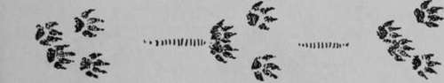
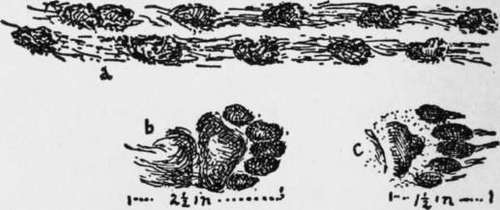

Hiking In The Snow
Description
This section is from the book "The Book Of Woodcraft", by Ernest Thompson Seton. Also available from Amazon: The Book of Woodcraft.
Hiking In The Snow
In the suggested programs I have given a number of outlines for one-day hikes. For those who wish to find out what animals live near there is no time better than when the snow is on the ground.
I remember a hike of the snow-track kind that afforded myself and two boy friends a number of thrills, more than twenty-five years ago.
There were three of us out on a prowl through the woods, looking for game. We saw no live thing, but there had been a fall of soft snow, a few days before; tracks were abundant, and I proposed that each of us take a track and follow it through thick and thin, until he found the beast, which, if living and free, was bound to be at the other end of the fine; or, until he found its den. Then, each should halloa to let the others know that his quarry was holed. Close by were the tracks of a mink and of two skunks. The mink-track was my guide. It led southward. I followed it through swamps and brushwood, under logs, and into promising nooks. Soon I crossed the trail of the youngest boy, closely pursuing his skunk. Later, I met my friend of skunk No. 2, but our trails diverged. Now I came to a long hill down which my mink had tobogganed six or eight feet, after the manner of the otter. At last the trail came to an end in a perfect labyrinth of logs and brush. I went all around this. The snow was clear and smooth. My mink was certainly in this pile. So I let off a long halloa and got an answer from one of the boys, who left his trail and came to me within a few minutes. It happened that this one, Charlie, was carrying a bag with a ferret in it, that we had brought in the hope that we might run to earth a rabbit; and this particular ferret was, like everything his owner had, "absolutely the best in Canada." He claimed that it could kill rats, six at a time; that it could drive a fox out of its hole; that it was not afraid of a coon; while a skunk or a mink was simply beneath its notice. I now suggested that this greatest of ferrets be turned in after the mink, while we watched around the pile of logs.
Mink track.
I never did like a ferret. He is such an imp of murder incarnate. It always gives me the creeps to see the bloodthirsty brute, like a four-legged snake, dive into some hole, with death and slaughter as his job. I hate him; but, after all, there is something thrilling and admirable about his perfectly diabolical courage. How would one of us like to be sent alone into a dark cave, to find out and fight some unknown monster, much larger than ourselves, and able, for aught we know, to tear us into pieces in a moment!
Skunk track.
But the ferret never faltered; he dived into the log labyrinth. It was a small ferret and a big mink; I awaited anxiously. After a long silence, we saw our four-footed partner at the farther end, unruffled, calm and sinuous.
Nothing had happened. We saw no mink, but I knew he was there. The ferretteer said, "It just proved what he had claimed - 'a mink was beneath his ferret's notice'!" Maybe?
Now, we heard the shout of hunter No. 2. We answered. He came to us to say that, after faithfully following his skunk-trail leader for two hours, through forest, field and fen, he had lost it in a host of tracks in a ravine some half-a-mile away.
So we gave our undivided attention to skunk No. 1, and in a few minutes had traced him to a hole, into which there led a multitude of trails, and from which there issued an odor whose evidence was beyond question. Again we submitted the case to our subterranean representative, and nothing loth the ferret glided down. But presently reappeared, much as he went, undisturbed and unodorized. Again and again he was sent down, but with the same result. So at length we thrust him ignominiously into the bag. The ferret's owner said there was no skunk; the rest of us said there was, but that the ferret was "scared," "no good," etc. Then, a plan suggested itself for clearing or convicting that best of all ferrets. We plugged up the skunk hole, and went back to the house. It seemed that the youngest brother of one of my companions had a tiny pet dog, a toy, the darling of his heart - just such a dog as you read about; a most miserable, pampered, cross, ill-bred, useless and snarling little beast, about the size of a large rat. Prince was his name, for Abraham, his little master, never lost in opportunity of asserting that this was the prince of all dogs, and that his price was above rubies. But Prince had made trouble for Bob more than once, and Bob was ready to sacrifice Prince on the altar of science, if need be. Indeed, Satan had entered into Bob's heart and sketched there a plausible but wicked plan. So this boy set to work and coaxed Prince to leave the house, and beguiled him with soft words, so that he came with us to the skunk's den in the woods. It required but little encouragement, then, to get that aggressive little beast of a doglet to run into the hole and set about making himself disagreeable to its occupant. Presently, we were entertained with a succession of growlets and barklets, then a volley of howlets, followed by that awful smell - you know.
Soon afterward, Prince reappeared, howling. For some minutes he did nothing but roll himself in the snow, rub his eyes and yell. So that after all, in spite of our ferret's evidence, there was a skunk in the hole, and the ferret had really demonstrated a vast discretion; in fact, was probably the discreetest ferret in Canada.
We had got good proof of that skunk's existence but we did not get him, and had to go home wondering how we should square ourselves for our sacrilege in the matter of the pet dog. It was Bob's job to explain, and no one tried to rob him of the glory. He began by sowing a few casual remarks, such as, "Pears to me there must be a skunk under the barn." Then, later, when Prince bounded in, "Phew! 'pears to me that there fool purp has been after that skunk!"
Continue to:
Tags
bookdome.com, books, online, free, old, antique, new, read, browse, download